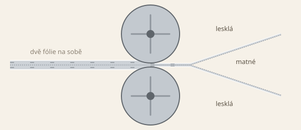

Proč má alobal lesklou a matnou stranu
Alobal je tak tenký, že se v posledním průchodu válcuje ve dvou vrstvách najednou. Strany, které se dotýkají leštěných válců, jsou lesklé. Strany, které se dotýkají druhé fólie, jsou matné.
Válcování ve dvou vrstvách

Hliníkové ingoty se nejdřív válcují za tepla na svitky tloušťky 2 až 4 mm. Svitky se potom postupně válcují za studena až na konečnou tloušťku fólie. Druhý postup ingot vynechá: roztavený kov se plynule odlévá rovnou do silného pásu.
Pás prochází mezerou mezi dvěma válci a při každém průchodu se ztenčí a prodlouží. Objem kovu se nemění, a proto tenčí pás za válci jede rychleji než silnější pás před nimi.
U fólie tenčí než 0,025 mm by mezera mezi válci musela být velmi malá a tenký pás by se snadno trhal. Proto se do válců vedou dva pásy na sobě. Vstupní tloušťka se tím zdvojnásobí, pás se méně trhá, výroba je rychlejší a tloušťka se lépe řídí.
Za válci se oba pásy oddělí. Vnější strany se dotýkaly leštěných ocelových válců a zůstaly hladké a lesklé. Vnitřní strany se dotýkaly druhé fólie a jsou matné.
Na kterou stranu jídlo
Obě strany mají stejnou tloušťku i kov a teplo vedou stejně. Pro běžné pečení je jedno, kterou stranou alobal položíš. Lesklá strana odráží víc světla.
Výjimkou je alobal s nepřilnavou vrstvou. Ta je na matné straně a jídlo patří na ni.
Souvislosti s kapitolami
Zdroje
- Wikipedia: Aluminium foil — tloušťky alobalu, válcování dvou vrstev a jeho důvody, lesklá a matná strana.
- EAFA (Evropská asociace výrobců hliníkové fólie): Facts and Properties — válcování za tepla na svitky 2 až 4 mm, za studena na konečnou tloušťku, plynulé odlévání, dvě vrstvy najednou, matná vnitřní strana.
- AL Circle: The surprising science behind aluminium foil’s shiny and dull sides — leštěné válce, vedení tepla obou stran, nepřilnavá vrstva.